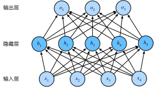
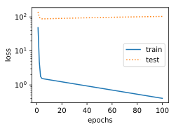
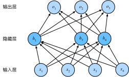

3.1 线性回归
线性回归输出是一个连续值，因此适用于回归问题。回归问题在实际中很常见，如预测房屋价格、气温、销售额等连续值的问题。与回归问题不同，分类问题中模型的最终输出是一个离散值。我们所说的图像分类、垃圾邮件识别、疾病检测等输出为离散值的问题都属于分类问题的范畴。softmax回归则适用于分类问题。
由于线性回归和softmax回归都是单层神经网络，它们涉及的概念和技术同样适用于大多数的深度学习模型。我们首先以线性回归为例，介绍大多数深度学习模型的基本要素和表示方法。
3.1.1 线性回归的基本要素
我们以一个简单的房屋价格预测作为例子来解释线性回归的基本要素。这个应用的目标是预测一栋房子的售出价格（元）。我们知道这个价格取决于很多因素，如房屋状况、地段、市场行情等。为了简单起见，这里我们假设价格只取决于房屋状况的两个因素，即面积（平方米）和房龄（年）。接下来我们希望探索价格与这两个因素的具体关系。
模型
设房屋的面积为，房龄为，售出价格为。我们需要建立基于输入和来计算输出的表达式，也就是模型（model）。顾名思义，线性回归假设输出与各个输入之间是线性关系：
其中和是权重（weight），是偏差（bias），且均为标量。它们是线性回归模型的参数（parameter）。模型输出是线性回归对真实价格的预测或估计。我们通常允许它们之间有一定误差。
模型训练
接下来我们需要通过数据来寻找特定的模型参数值，使模型在数据上的误差尽可能小。这个过程叫作模型训练（model training）。下面我们介绍模型训练所涉及的3个要素。
训练数据
我们通常收集一系列的真实数据，例如多栋房屋的真实售出价格和它们对应的面积和房龄。我们希望在这个数据上面寻找模型参数来使模型的预测价格与真实价格的误差最小。在机器学习术语里，该数据集被称为训练数据集（training data set）或训练集（training set），一栋房屋被称为一个样本（sample），其真实售出价格叫作标签（label），用来预测标签的两个因素叫作特征（feature）。特征用来表征样本的特点。
假设我们采集的样本数为，索引为的样本的特征为和，标签为。对于索引为的房屋，线性回归模型的房屋价格预测表达式为
损失函数
在模型训练中，我们需要衡量价格预测值与真实值之间的误差。通常我们会选取一个非负数作为误差，且数值越小表示误差越小。一个常用的选择是平方函数。它在评估索引为的样本误差的表达式为
其中常数使对平方项求导后的常数系数为1，这样在形式上稍微简单一些。显然，误差越小表示预测价格与真实价格越相近，且当二者相等时误差为0。给定训练数据集，这个误差只与模型参数相关，因此我们将它记为以模型参数为参数的函数。在机器学习里，将衡量误差的函数称为损失函数（loss function）。这里使用的平方误差函数也称为平方损失（square loss）。
通常，我们用训练数据集中所有样本误差的平均来衡量模型预测的质量，即
在模型训练中，我们希望找出一组模型参数，记为，来使训练样本平均损失最小：
优化算法
当模型和损失函数形式较为简单时，上面的误差最小化问题的解可以直接用公式表达出来。这类解叫作解析解（analytical solution）。本节使用的线性回归和平方误差刚好属于这个范畴。然而，大多数深度学习模型并没有解析解，只能通过优化算法有限次迭代模型参数来尽可能降低损失函数的值。这类解叫作数值解（numerical solution）。
在求数值解的优化算法中，小批量随机梯度下降（mini-batch stochastic gradient descent）在深度学习中被广泛使用。它的算法很简单：先选取一组模型参数的初始值，如随机选取；接下来对参数进行多次迭代，使每次迭代都可能降低损失函数的值。在每次迭代中，先随机均匀采样一个由固定数目训练数据样本所组成的小批量（mini-batch），然后求小批量中数据样本的平均损失有关模型参数的导数（梯度），最后用此结果与预先设定的一个正数的乘积作为模型参数在本次迭代的减小量。
在训练本节讨论的线性回归模型的过程中，模型的每个参数将作如下迭代：
在上式中，代表每个小批量中的样本个数（批量大小，batch size），称作学习率（learning rate）并取正数。需要强调的是，这里的批量大小和学习率的值是人为设定的，并不是通过模型训练学出的，因此叫作超参数（hyperparameter）。我们通常所说的“调参”指的正是调节超参数，例如通过反复试错来找到超参数合适的值。在少数情况下，超参数也可以通过模型训练学出。本书对此类情况不做讨论。
模型预测
模型训练完成后，我们将模型参数在优化算法停止时的值分别记作。注意，这里我们得到的并不一定是最小化损失函数的最优解，而是对最优解的一个近似。然后，我们就可以使用学出的线性回归模型来估算训练数据集以外任意一栋面积（平方米）为、房龄（年）为的房屋的价格了。这里的估算也叫作模型预测、模型推断或模型测试。
3.1.2 线性回归的表示方法
我们已经阐述了线性回归的模型表达式、训练和预测。下面我们解释线性回归与神经网络的联系，以及线性回归的矢量计算表达式。
神经网络图
在深度学习中，我们可以使用神经网络图直观地表现模型结构。为了更清晰地展示线性回归作为神经网络的结构，图3.1使用神经网络图表示本节中介绍的线性回归模型。神经网络图隐去了模型参数权重和偏差。
在图3.1所示的神经网络中，输入分别为和，因此输入层的输入个数为2。输入个数也叫特征数或特征向量维度。图3.1中网络的输出为，输出层的输出个数为1。需要注意的是，我们直接将图3.1中神经网络的输出作为线性回归的输出，即。由于输入层并不涉及计算，按照惯例，图3.1所示的神经网络的层数为1。所以，线性回归是一个单层神经网络。输出层中负责计算的单元又叫神经元。在线性回归中，的计算依赖于和。也就是说，输出层中的神经元和输入层中各个输入完全连接。因此，这里的输出层又叫全连接层（fully-connected layer）或稠密层（dense layer）。
矢量计算表达式
3.2 线性回归的从零开始实现
在了解了线性回归的背景知识之后，现在我们可以动⼿实现它了。尽管强⼤的深度学习框架可以减少⼤量重复性⼯作，但若过于依赖它提供的便利，会导致我们很难深⼊理解深度学习是如何⼯作的。因此，本节将介绍如何只利⽤NDArray和autograd来实现⼀个线性回归的训练。⾸先，导⼊本节中实验所需的包或模块，其中的matplotlib包可⽤于作图，且设置成嵌⼊显⽰。

3.2.1 生成数据集
我们构造⼀个简单的⼈⼯训练数据集，它可以使我们能够直观⽐较学到的参数和真实的模型参数的区别。设训练数据集样本数为，输⼊个数（特征数）为。给定随机⽣成的批量样本特征，我们使⽤线性回归模型真实权重和偏差，以及⼀个随机噪声项来⽣成标签
其中噪声项服从均值为、标准差为的正态分布。噪声代表了数据集中⽆意义的⼲扰。下⾯，让我们⽣成数据集。

注意，features的每⼀⾏是⼀个⻓度为2的向量，而labels的每⼀⾏是⼀个⻓度为1的向量（标量）。

通过⽣成第⼆个特征features[:, 1]和标签labels的散点图，可以更直观地观察两者间的线性关系。

我们将上⾯的plt作图函数以及use_svg_display函数和set_figsize函数定义在d2lzh包⾥。以后在作图时，我们将直接调⽤d2lzh.plt。由于plt在d2lzh包中是⼀个全局变量，我们在作图前只需要调⽤d2lzh.set_figsize()即可打印⽮量图并设置图的尺⼨。
3.2.2 读取数据
在训练模型的时候，我们需要遍历数据集并不断读取小批量数据样本。这⾥我们定义⼀个函数：它每次返回batch_size（批量⼤小）个随机样本的特征和标签。

让我们读取第⼀个小批量数据样本并打印。每个批量的特征形状为(10, 2)，分别对应批量⼤小和输⼊个数；标签形状为批量⼤小。

3.2.3 初始化模型参数
我们将权重初始化成均值为0、标准差为0.01的正态随机数，偏差则初始化成0。

之后的模型训练中，需要对这些参数求梯度来迭代参数的值，因此我们需要创建它们的梯度。

3.2.4 定义模型
下⾯是线性回归的⽮量计算表达式的实现。我们使⽤dot函数做矩阵乘法。

3.2.5 定义损失函数
我们使用上一节描述的平方损失来定义线性回归的损失函数.在实现中，我们需要把真实值y变形成预测值y_hat的形状。以下函数返回的结果也将和y_hat的形状相同。

3.2.6 定义优化算法
以下的sgd函数实现了上⼀节中介绍的小批量随机梯度下降算法。它通过不断迭代模型参数来优化损失函数。这⾥⾃动求梯度模块计算得来的梯度是⼀个批量样本的梯度和。我们将它除以批量⼤小来得到平均值。

3.2.7 训练模型
在训练中，我们将多次迭代模型参数。在每次迭代中，我们根据当前读取的小批量数据样本（特征X和标签y），通过调⽤反向函数backward计算小批量随机梯度，并调⽤优化算法sgd迭代模型参数。由于我们之前设批量⼤小batch_size为10，每个小批量的损失l的形状为(10, 1)。回忆⼀下“⾃动求梯度”⼀节。由于变量l并不是⼀个标量，运⾏l.backward()将对l中元素求和得到新的变量，再求该变量有关模型参数的梯度。
在⼀个迭代周期（epoch）中，我们将完整遍历⼀遍data_iter函数，并对训练数据集中所有样本都使⽤⼀次（假设样本数能够被批量⼤小整除）。这⾥的迭代周期个数num_epochs和学习率lr都是超参数，分别设3和0.03。在实践中，⼤多超参数都需要通过反复试错来不断调节。虽然迭代周期数设得越⼤模型可能越有效，但是训练时间可能过⻓。而有关学习率对模型的影响，我
们会在后⾯“优化算法”⼀章中详细介绍。

训练完成后，我们可以⽐较学到的参数和⽤来⽣成训练集的真实参数。它们应该很接近。

3.3 线性回归的简洁实现
随着深度学习框架的发展，开发深度学习应⽤变得越来越便利。实践中，我们通常可以⽤⽐上⼀节更简洁的代码来实现同样的模型。在本节中，我们将介绍如何使⽤MXNet提供的Gluon接口更⽅便地实现线性回归的训练。
3.3.1 生成数据集
我们⽣成与上⼀节中相同的数据集。其中features是训练数据特征，labels是标签。

3.3.2 读取数据
Gluon提供了data包来读取数据。由于data常⽤作变量名，我们将导⼊的data模块⽤添加了Gluon⾸字⺟的假名gdata代替。在每⼀次迭代中，我们将随机读取包含10个数据样本的小批量。

这⾥data_iter的使⽤跟上⼀节中的⼀样。让我们读取并打印第⼀个小批量数据样本。

3.3.3 定义模型
在上⼀节从零开始的实现中，我们需要定义模型参数，并使⽤它们⼀步步描述模型是怎样计算的。当模型结构变得更复杂时，这些步骤将变得更繁琐。其实，Gluon提供了⼤量预定义的层，这使我们只需关注使⽤哪些层来构造模型。下⾯将介绍如何使⽤Gluon更简洁地定义线性回归。
⾸先，导⼊nn模块。实际上，“nn”是neural networks（神经⽹络）的缩写。顾名思义，该模块定义了⼤量神经⽹络的层。我们先定义⼀个模型变量net，它是⼀个Sequential实例。在Gluon中，Sequential实例可以看作是⼀个串联各个层的容器。在构造模型时，我们在该容器中依次添加层。当给定输⼊数据时，容器中的每⼀层将依次计算并将输出作为下⼀层的输⼊。

回顾图3.1中线性回归在神经⽹络图中的表⽰。作为⼀个单层神经⽹络，线性回归输出层中的神经元和输⼊层中各个输⼊完全连接。因此，线性回归的输出层⼜叫全连接层。在Gluon中，全连接层是⼀个Dense实例。我们定义该层输出个数为1。

值得⼀提的是，在Gluon中我们⽆须指定每⼀层输⼊的形状，例如线性回归的输⼊个数。当模型得到数据时，例如后⾯执⾏net(X)时，模型将⾃动推断出每⼀层的输⼊个数。我们将在之后“深度学习计算”⼀章详细介绍这种机制。Gluon的这⼀设计为模型开发带来便利。
3.3.4 初始化模型参数
在使⽤net前，我们需要初始化模型参数，如线性回归模型中的权重和偏差。我们从MXNet导⼊init模块。该模块提供了模型参数初始化的各种⽅法。这⾥的init是initializer的缩写形式。我们通过init.Normal(sigma=0.01)指定权重参数每个元素将在初始化时随机采样于均值为0、标准差为0.01的正态分布。偏差参数默认会初始化为零(官网描述为0.01)。

3.3.5 定义损失函数
在Gluon中，loss模块定义了各种损失函数。我们⽤假名gloss代替导⼊的loss模块，并直接使⽤它提供的平⽅损失作为模型的损失函数。

3.3.6 定义优化算法
同样，我们也⽆须实现小批量随机梯度下降。在导⼊Gluon后，我们创建⼀个Trainer实例，并指定学习率为0.03的小批量随机梯度下降（sgd）为优化算法。该优化算法将⽤来迭代net实例所有通过add函数嵌套的层所包含的全部参数。这些参数可以通过collect_params函数获取。

3.3.7 训练模型
在使⽤Gluon训练模型时，我们通过调⽤Trainer实例的step函数来迭代模型参数。上⼀节中我们提到，由于变量l是⻓度为batch_size的⼀维NDArray，执⾏l.backward()等价于执⾏l.sum().backward()。按照小批量随机梯度下降的定义，我们在step函数中指明批量⼤小，从而对批量中样本梯度求平均。

下⾯我们分别⽐较学到的模型参数和真实的模型参数。我们从net获得需要的层，并访问其权重（weight）和偏差（bias）。学到的参数和真实的参数很接近。

小结
- 使用Gluon可以更简洁地实现模型。
- 在Gluon中，data模块提供了有关数据处理的⼯具，nn模块定义了⼤量神经⽹络的层，loss模块定义了各种损失函数。
- MXNet的initializer模块提供了模型参数初始化的各种⽅法。
练习
- 如果将l = loss(net(X), y)替换成l = loss(net(X), y).mean()，我们需要将trainer.step(batch_size)相应地改成trainer.step(1)。这是为什么呢？
因为step会默认取平均,如果我们在loss手动(manually)平均,那么step处就需要设置为1 - 查阅MXNet⽂档，看看gluon.loss和init模块⾥提供了哪些损失函数和初始化⽅法。

- 如何访问dense.weight的梯度？
dense.weight.grad()
3.4 softmax回归
前⼏节介绍的线性回归模型适⽤于输出为连续值的情景。在另⼀类情景中，模型输出可以是⼀个像图像类别这样的离散值。对于这样的离散值预测问题，我们可以使⽤诸如softmax回归在内的分类模型。和线性回归不同，softmax回归的输出单元从⼀个变成了多个，且引⼊了softmax运算使输出更适合离散值的预测和训练。本节以softmax回归模型为例，介绍神经⽹络中的分类模型。
3.4.1 分类问题
让我们考虑⼀个简单的图像分类问题，其输⼊图像的⾼和宽均为2像素，且⾊彩为灰度。这样每个像素值都可以⽤⼀个标量表⽰。我们将图像中的4像素分别记为。假设训练数据集中图像的真实标签为狗、猫或鸡（假设可以⽤4像素表⽰出这3种动物），这些标签分别对应离散值。
3.4.2 softmax回归模型
softmax回归跟线性回归⼀样将输⼊特征与权重做线性叠加。与线性回归的⼀个主要不同在于，softmax回归的输出值个数等于标签⾥的类别数。因为⼀共有4种特征和3种输出动物类别，所以权重包含12个标量（带下标的w）、偏差包含3个标量（带下标的b），且对每个输⼊计算o1, o2, o3这3个输出：
图3.2⽤神经⽹络图描绘了上⾯的计算。softmax回归同线性回归⼀样，也是⼀个单层神经⽹络。由于每个输出的计算都要依赖于所有的输⼊，softmax回归的输出层也是⼀个全连接层。

softmax运算
既然分类问题需要得到离散的预测输出，⼀个简单的办法是将输出值当作预测类别是i的置信度，并将值最⼤的输出所对应的类作为预测输出，即输出。例如，如果分别为，由于最⼤，那么预测类别为，其代表猫。
然而，直接使⽤输出层的输出有两个问题。⼀⽅⾯，由于输出层的输出值的范围不确定，我们难以直观上判断这些值的意义。例如，刚才举的例⼦中的输出值表⽰“很置信”图像类别为猫，因为该输出值是其他两类的输出值的倍。但如果，那么输出值却⼜表⽰图像类别为猫的概率很低。另⼀⽅⾯，由于真实标签是离散值，这些离散值与不确定范围的输出值之间的误差难以衡量。
softmax运算符（softmax operator）解决了以上两个问题。它通过下式将输出值变换成值为正且和为1的概率分布：
其中
容易看出且,因此是一个合法的概率分布.
3.4.3 单样本分类的矢量计算表达式
为了提⾼计算效率，我们可以将单样本分类通过⽮量计算来表达。在上⾯的图像分类问题中，假设softmax回归的权重和偏差参数分别为
设⾼和宽分别为个像素的图像样本的特征为
输出层的输出为
预测为狗、猫或鸡的概率分布为
softmax回归对样本分类的⽮量计算表达式为
3.4.4 小批量样本分类的矢量计算表达式
为了进⼀步提升计算效率，我们通常对小批量数据做⽮量计算。⼴义上讲，给定⼀个小批量样本，其批量⼤小为，输⼊个数（特征数）为，输出个数（类别数）为。设批量特征为。假设softmax回归的权重和偏差参数分别为和。softmax回归的⽮量计算表达式为
其中的加法运算使⽤了⼴播机制，且这两个矩阵的第⾏分别为样本的输出和概率分布。
3.4.5 交叉熵损失函数
前⾯提到，使⽤softmax运算后可以更⽅便地与离散标签计算误差。我们已经知道，softmax运算将输出变换成⼀个合法的类别预测分布。实际上，真实标签也可以⽤类别分布表达：对于样本，我们构造向量 ，使其第（样本类别的离散数值）个元素为，其余为。这样我们的训练⽬标可以设为使预测概率分布尽可能接近真实的标签概率分布。
我们可以像线性回归那样使⽤平⽅损失函数.然而，想要预测分类结果正确，我们其实并不需要预测概率完全等于标签概率。例如，在图像分类的例⼦⾥，如果,那么
我们只需要⽐其他两个预测值和大就行了.即使值为,不管其他两个预测值为多少，类别预测均正确。而平⽅损失则过于严格，例如比的损失要小很多,虽然两者都有同样正确的分类预测结果。
改善上述问题的⼀个⽅法是使⽤更适合衡量两个概率分布差异的测量函数。其中，交叉熵（cross entropy）是⼀个常⽤的衡量⽅法：
其中带下标的是向量中非0即1的元素,需要注意将它与样本类别的离散数值,即不带下标的区分.在上式中，我们知道向量中只有第个元素为1,其余全为0,于是.也就是说，交叉熵只关⼼对正确类别的预测概率，因为只要其值⾜够⼤，就可以确保分类结果正确。当然，遇到⼀个样本有多个标签时，例如图像⾥含有不⽌⼀个物体时，我们并不能做这⼀步简化。但即便对于这种情况，交叉熵同样只关⼼对图像中出现的物体类别的预测概率。
假设训练数据集的样本数为，交叉熵损失函数定义为
其中代表模型参数。同样地，如果每个样本只有⼀个标签，那么交叉熵损失可以简写成.从另一个角度来看,我们知道最小化等价于最大化,即最小化交叉熵损失函数等价于最大化训练数据集所有标签类别的联合预测概率.
3.4.6 模型预测及评价
在训练好softmax回归模型后,给定任一样本特征,就可以测试每个输出类别的概率.通常,我们把预测概率最大的类别作为输出类别.如果它与真实类别(标签)一致,说明这次预测是正确的.在之后"softmax回归的从零开始实现"一节的实验中,我们将使用准确率(accuracy)来评价模型的表现.它等于正确预测数量与总预测数量之比.
小结
- softmax回归适用于分类问题.它使用softmax运算输出类别的概率分布
- softmax回归是一个单层神经网络,输出个数等于分类问题中的类别个数
- 交叉熵适合衡量两个概率分布的差异
3.5 图像分类数据集(Fashion-MNIST)
在介绍softmax回归的实现前我们先引⼊⼀个多类图像分类数据集。它将在后⾯的章节中被多次使⽤，以⽅便我们观察⽐较算法之间在模型精度和计算效率上的区别。图像分类数据集中最常⽤的是⼿写数字识别数据集MNIST[1]。但⼤部分模型在MNIST上的分类精度都超过了95%。为了更直观地观察算法之间的差异，我们将使⽤⼀个图像内容更加复杂的数据集Fashion-MNIST[2]。
3.5.1 获取数据集
⾸先导⼊本节需要的包或模块。

下⾯，我们通过Gluon的data包来下载这个数据集。第⼀次调⽤时会⾃动从⽹上获取数据。我们通过参数train来指定获取训练数据集或测试数据集（testing data set）。测试数据集也叫测试集（testing set），只⽤来评价模型的表现，并不⽤来训练模型。

训练集中和测试集中的每个类别的图像数分别为和。因为有个类别，所以训练集和测试集的样本数分别为和。

我们可以通过⽅括号[]来访问任意⼀个样本，下⾯获取第⼀个样本的图像和标签。

变量feature对应⾼和宽均为28像素的图像。每个像素的数值为到之间位⽆符号整数（uint8）。它使⽤三维的NDArray存储。其中的最后⼀维是通道数。因为数据集中是灰度图像，所以通道数为1。为了表述简洁，我们将⾼和宽分别为h和w像素的图像的形状记为或。

图像的标签使⽤NumPy的标量表⽰。它的类型为32位整数（int32）。

Fashion-MNIST中⼀共包括了10个类别，分别为t-shirt（T恤）、trouser（裤⼦）、pullover（套衫）、dress（连⾐裙）、coat（外套）、sandal（凉鞋）、shirt（衬衫）、sneaker（运动鞋）、bag（包）和ankleboot（短靴）。以下函数可以将数值标签转成相应的⽂本标签。

下⾯定义⼀个可以在⼀⾏⾥画出多张图像和对应标签的函数。

现在，我们看⼀下训练数据集中前个样本的图像内容和⽂本标签。

3.5.2 读取小批量
我们将在训练数据集上训练模型，并将训练好的模型在测试数据集上评价模型的表现。虽然我们可以像“线性回归的从零开始实现”⼀节中那样通过yield来定义读取小批量数据样本的函数，但为了代码简洁，这⾥我们直接创建DataLoader实例。该实例每次读取⼀个样本数为batch_size的小批量数据。这⾥的批量⼤小batch_size是⼀个超参数。
在实践中，数据读取经常是训练的性能瓶颈，特别当模型较简单或者计算硬件性能较⾼时。Gluon的DataLoader中⼀个很⽅便的功能是允许使⽤多进程来加速数据读取（暂不⽀持Windows操作系统）。这⾥我们通过参数num_workers来设置个进程读取数据。
此外，我们通过ToTensor实例将图像数据从uint8格式变换成32位浮点数格式，并除以使得所有像素的数值均在到之间。ToTensor实例还将图像通道从最后⼀维移到最前⼀维来⽅便之后介绍的卷积神经⽹络计算。通过数据集的transform_first函数，我们将ToTensor的变换应⽤在每个数据样本（图像和标签）的第⼀个元素，即图像之上。

我们将获取并读取Fashion-MNIST数据集的逻辑封装在d2lzh.load_data_fashion_mnist函数中供后⾯章节调⽤。该函数将返回train_iter和test_iter两个变量。随着本书内容的不断深⼊，我们会进⼀步改进该函数。它的完整实现将在“深度卷积神经⽹络（AlexNet）”⼀节中描述。
最后我们查看读取⼀遍训练数据需要的时间。

小结
3.6 softmax回归的从零开始实现
这⼀节我们来动⼿实现softmax回归。⾸先导⼊本节实现所需的包或模块。

3.6.1 获取和读取数据
我们将使⽤Fashion-MNIST数据集，并设置批量⼤小为256。

3.6.2 初始化模型参数
跟线性回归中的例⼦⼀样，我们将使⽤向量表⽰每个样本。已知每个样本输⼊是⾼和宽均为像素的图像。模型的输⼊向量的⻓度是：该向量的每个元素对应图像中每个像素。由于图像有个类别，单层神经⽹络输出层的输出个数为，因此softmax回归的权重和偏差参数分别为和的矩阵。

同之前⼀样，我们要为模型参数附上梯度。

3.6.3 实现softmax运算
在介绍如何定义softmax回归之前,我们先描述⼀下对如何对多维NDArray按维度操作。在下⾯的例⼦中，给定⼀个NDArray矩阵X。我们可以只对其中同⼀列（axis=0）或同⼀⾏（axis=1）的元素求和，并在结果中保留⾏和列这两个维度（keepdims=True）。

下⾯我们就可以定义前⾯小节⾥介绍的softmax运算了。在下⾯的函数中，矩阵X的⾏数是样本数，列数是输出个数。为了表达样本预测各个输出的概率，softmax运算会先通过exp函数对每个元素做指数运算，再对exp矩阵同⾏元素求和，最后令矩阵每⾏各元素与该⾏元素之和相除。这样⼀来，最终得到的矩阵每⾏元素和为且⾮负。因此，该矩阵每⾏都是合法的概率分布。softmax运算的输出矩阵中的任意⼀⾏元素代表了⼀个样本在各个输出类别上的预测概率。

可以看到，对于随机输⼊，我们将每个元素变成了⾮负数，且每⼀⾏和为。

3.6.4 定义模型
有了softmax运算，我们可以定义上节描述的softmax回归模型了。这⾥通过reshape函数将每张原始图像改成⻓度为num_inputs的向量。

3.6.5 定义损失函数
上⼀节中，我们介绍了softmax回归使⽤的交叉熵损失函数。为了得到标签的预测概率，我们可以使⽤pick函数。在下⾯的例⼦中，变量y_hat是2个样本在3个类别的预测概率，变量y是这2个样本的标签类别。通过使⽤pick函数，我们得到了2个样本的标签的预测概率。与“softmax回归”⼀节数学表述中标签类别离散值从1开始逐⼀递增不同，在代码中，标签类别的离散值是从0开始逐⼀递增的。

下⾯实现了“softmax回归”⼀节中介绍的交叉熵损失函数。

3.6.6 计算分类准确率
给定⼀个类别的预测概率分布y_hat，我们把预测概率最⼤的类别作为输出类别。如果它与真实类别y⼀致，说明这次预测是正确的。分类准确率即正确预测数量与总预测数量之⽐。
为了演⽰准确率的计算，下⾯定义准确率accuracy函数。其中y_hat.argmax(axis=1)返回矩阵y_hat每⾏中最⼤元素的索引，且返回结果与变量y形状相同。我们在“数据操作”⼀节介
绍过，相等条件判断式(y_hat.argmax(axis=1) == y)是⼀个值为0（相等为假）或1（相等为真）的NDArray。由于标签类型为整数，我们先将变量y变换为浮点数再进⾏相等条件判断。

让我们继续使⽤在演⽰pick函数时定义的变量y_hat和y，并将它们分别作为预测概率分布和标签。可以看到，第⼀个样本预测类别为（该⾏最⼤元素在本⾏的索引为），与真实标签不⼀致；第⼆个样本预测类别为2（该⾏最⼤元素在本⾏的索引为），与真实标签⼀致。因此，这两个样本上的分类准确率为。

类似地，我们可以评价模型net在数据集data_iter上的准确率。

因为我们随机初始化了模型net,所以这个随机模型的准确率应该接近于类别个数的倒数
3.6.7 训练模型
训练softmax回归的实现跟“线性回归的从零开始实现”⼀节介绍的线性回归中的实现⾮常相似。我们同样使⽤小批量随机梯度下降来优化模型的损失函数。在训练模型时，迭代周期数num_epochs和学习率lr都是可以调的超参数。改变它们的值可能会得到分类更准确的模型。
1 | import d2lzh as d2l |
结果如下

3.6.8 预测
训练完成后，现在就可以演⽰如何对图像进⾏分类了。给定⼀系列图像（第三⾏图像输出），我们⽐较⼀下它们的真实标签（第⼀⾏⽂本输出）和模型预测结果（第⼆⾏⽂本输出）。

小结
- 可以使用softmax回归做多类别分类.与训练线性回归相比,你会发现训练softmax回归的步骤和它非常相似:获取并读取数据、定义模型和损失函数并使⽤优化算法训练模型。事实上，绝⼤多数深度学习模型的训练都有着类似的步骤。
3.7 softmax回归的简洁实现
我们在“线性回归的简洁实现”⼀节中已经了解了使⽤Gluon实现模型的便利。下⾯，让我们再次使⽤Gluon来实现⼀个softmax回归模型。⾸先导⼊所需的包或模块。

1 | import d2lzh as d2l |
结果如下

3.8 多层感知机
我们已经介绍了包括线性回归和softmax回归在内的单层神经网络。然而深度学习主要关注多层模型。在本节中，我们将以多层感知机（multilayer perceptron，MLP）为例，介绍多层神经网络的概念。
3.8.1 隐藏层
多层感知机在单层神经网络的基础上引入了一到多个隐藏层（hidden layer）。隐藏层位于输入层和输出层之间。图3.3展示了一个多层感知机的神经网络图。

在图3.3所示的多层感知机中，输入和输出个数分别为4和3，中间的隐藏层中包含了5个隐藏单元（hidden unit）。由于输入层不涉及计算，图3.3中的多层感知机的层数为2。由图3.3可见，隐藏层中的神经元和输入层中各个输入完全连接，输出层中的神经元和隐藏层中的各个神经元也完全连接。因此，多层感知机中的隐藏层和输出层都是全连接层。
具体来说，给定一个小批量样本，其批量大小为，输入个数为。假设多层感知机只有一个隐藏层，其中隐藏单元个数为。记隐藏层的输出（也称为隐藏层变量或隐藏变量）为，有。因为隐藏层和输出层均是全连接层，可以设隐藏层的权重参数和偏差参数分别为和 ，输出层的权重和偏差参数分别为和。
我们先来看一种含单隐藏层的多层感知机的设计。其输出的计算为
也就是将隐藏层的输出直接作为输出层的输入。如果将以上两个式子联立起来，可以得到
从联立后的式子可以看出，虽然神经网络引入了隐藏层，却依然等价于一个单层神经网络：其中输出层权重参数为，偏差参数为。不难发现，即便再添加更多的隐藏层，以上设计依然只能与仅含输出层的单层神经网络等价。
3.8.2 激活函数
上述问题的根源在于全连接层只是对数据做仿射变换（affine transformation），而多个仿射变换的叠加仍然是一个仿射变换。解决问题的一个方法是引入非线性变换，例如对隐藏变量使用按元素运算的非线性函数进行变换，然后再作为下一个全连接层的输入。这个非线性函数被称为激活函数（activation function）。下面我们介绍几个常用的激活函数。
ReLU函数
ReLU（rectified linear unit）函数提供了一个很简单的非线性变换。给定元素，该函数定义为
可以看出，ReLU函数只保留正数元素，并将负数元素清零。为了直观地观察这一非线性变换，我们先定义一个绘图函数xyplot。
1 | %matplotlib inline |
我们接下来通过NDArray提供的relu函数来绘制ReLU函数。可以看到，该激活函数是一个两段线性函数。
1 | x = nd.arange(-8.0, 8.0, 0.1) |
显然，当输入为负数时，ReLU函数的导数为0；当输入为正数时，ReLU函数的导数为1。尽管输入为0时ReLU函数不可导，但是我们可以取此处的导数为0。下面绘制ReLU函数的导数。
1 | y.backward() |
sigmoid函数
sigmoid函数可以将元素的值变换到0和1之间：
sigmoid函数在早期的神经网络中较为普遍，但它目前逐渐被更简单的ReLU函数取代。在后面“循环神经网络”一章中我们会介绍如何利用它值域在0到1之间这一特性来控制信息在神经网络中的流动。下面绘制了sigmoid函数。当输入接近0时，sigmoid函数接近线性变换。
1 | with autograd.record(): |
依据链式法则，sigmoid函数的导数
下面绘制了sigmoid函数的导数。当输入为0时，sigmoid函数的导数达到最大值0.25；当输入越偏离0时，sigmoid函数的导数越接近0。
1 | y.backward() |
tanh函数
tanh（双曲正切）函数可以将元素的值变换到-1和1之间：
我们接着绘制tanh函数。当输入接近0时，tanh函数接近线性变换。虽然该函数的形状和sigmoid函数的形状很像，但tanh函数在坐标系的原点上对称。
1 | with autograd.record(): |
依据链式法则，tanh函数的导数
下面绘制了tanh函数的导数。当输入为0时，tanh函数的导数达到最大值1；当输入越偏离0时，tanh函数的导数越接近0。
1 | y.backward() |

3.8.3 多层感知机
多层感知机就是含有至少一个隐藏层的由全连接层组成的神经网络，且每个隐藏层的输出通过激活函数进行变换。多层感知机的层数和各隐藏层中隐藏单元个数都是超参数。以单隐藏层为例并沿用本节之前定义的符号，多层感知机按以下方式计算输出：
其中表示激活函数。在分类问题中，我们可以对输出做softmax运算，并使用softmax回归中的交叉熵损失函数。
在回归问题中，我们将输出层的输出个数设为1，并将输出直接提供给线性回归中使用的平方损失函数。
小结
- 多层感知机在输出层与输入层之间加入了一个或多个全连接隐藏层，并通过激活函数对隐藏层输出进行变换。
- 常用的激活函数包括ReLU函数、sigmoid函数和tanh函数。
练习
- 应用链式法则，推导出sigmoid函数和tanh函数的导数的数学表达式。
- 查阅资料，了解其他的激活函数。
扫码直达讨论区
3.9 多层感知机的从零开始实现
我们已经从上一节里了解了多层感知机的原理。下面，我们一起来动手实现一个多层感知机。首先导入实现所需的包或模块。
1 | %matplotlib inline |
3.9.1 获取和读取数据
这里继续使用Fashion-MNIST数据集。我们将使用多层感知机对图像进行分类。
1 | batch_size = 256 |
3.9.2 定义模型参数
我们在“softmax回归的从零开始实现”一节里已经介绍了，Fashion-MNIST数据集中图像形状为，类别数为10。本节中我们依然使用长度为的向量表示每一张图像。因此，输入个数为784，输出个数为10。实验中，我们设超参数隐藏单元个数为256。
1 | num_inputs, num_outputs, num_hiddens = 784, 10, 256 |
3.9.3 定义激活函数
这里我们使用基础的maximum函数来实现ReLU，而非直接调用relu函数。
1 | def relu(X): |
3.9.4 定义模型
同softmax回归一样，我们通过reshape函数将每张原始图像改成长度为num_inputs的向量。然后我们实现上一节中多层感知机的计算表达式。
1 | def net(X): |
3.9.5 定义损失函数
为了得到更好的数值稳定性，我们直接使用Gluon提供的包括softmax运算和交叉熵损失计算的函数。
1 | loss = gloss.SoftmaxCrossEntropyLoss() |
3.9.6 训练模型
训练多层感知机的步骤和“softmax回归的从零开始实现”一节中训练softmax回归的步骤没什么区别。我们直接调用d2lzh包中的train_ch3函数，它的实现已经在“softmax回归的从零开始实现”一节里介绍过。我们在这里设超参数迭代周期数为5，学习率为0.5。
1 | num_epochs, lr = 5, 0.5 |
epoch 1, loss 0.8513, train acc 0.682, test acc 0.821
epoch 2, loss 0.4956, train acc 0.816, test acc 0.850
epoch 3, loss 0.4328, train acc 0.841, test acc 0.843
epoch 4, loss 0.3987, train acc 0.854, test acc 0.864
epoch 5, loss 0.3719, train acc 0.862, test acc 0.860
小结
- 可以通过手动定义模型及其参数来实现简单的多层感知机。
- 当多层感知机的层数较多时，本节的实现方法会显得较烦琐，例如在定义模型参数的时候。
练习
- 改变超参数
num_hiddens的值，看看对实验结果有什么影响。 - 试着加入一个新的隐藏层，看看对实验结果有什么影响。
扫码直达讨论区
3.10 多层感知机的简洁实现
下面我们使用Gluon来实现上一节中的多层感知机。首先导入所需的包或模块。
1 | import d2lzh as d2l |
3.10.1 定义模型
和softmax回归唯一的不同在于，我们多加了一个全连接层作为隐藏层。它的隐藏单元个数为256，并使用ReLU函数作为激活函数。
1 | net = nn.Sequential() |
3.10.2 读取数据并训练模型
我们使用与“softmax回归的简洁实现”一节中训练softmax回归几乎相同的步骤来读取数据并训练模型。
1 | batch_size = 256 |
epoch 1, loss 0.7924, train acc 0.701, test acc 0.827
epoch 2, loss 0.4918, train acc 0.817, test acc 0.846
epoch 3, loss 0.4273, train acc 0.843, test acc 0.855
epoch 4, loss 0.3944, train acc 0.852, test acc 0.861
epoch 5, loss 0.3735, train acc 0.862, test acc 0.863
小结
- 通过Gluon可以更简洁地实现多层感知机。
练习
- 尝试多加入几个隐藏层，对比上一节中从零开始的实现。
- 使用其他的激活函数，看看对结果的影响。
扫码直达讨论区

3.11 模型选择、欠拟合和过拟合
在前几节基于Fashion-MNIST数据集的实验中，我们评价了机器学习模型在训练数据集和测试数据集上的表现。如果你改变过实验中的模型结构或者超参数，你也许发现了：当模型在训练数据集上更准确时，它在测试数据集上却不一定更准确。这是为什么呢？
3.11.1 训练误差和泛化误差
在解释上述现象之前，我们需要区分训练误差（training error）和泛化误差（generalization error）。通俗来讲，前者指模型在训练数据集上表现出的误差，后者指模型在任意一个测试数据样本上表现出的误差的期望，并常常通过测试数据集上的误差来近似。计算训练误差和泛化误差可以使用之前介绍过的损失函数，例如线性回归用到的平方损失函数和softmax回归用到的交叉熵损失函数。
让我们以高考为例来直观地解释训练误差和泛化误差这两个概念。训练误差可以认为是做往年高考试题（训练题）时的错误率，泛化误差则可以通过真正参加高考（测试题）时的答题错误率来近似。假设训练题和测试题都随机采样于一个未知的依照相同考纲的巨大试题库。如果让一名未学习中学知识的小学生去答题，那么测试题和训练题的答题错误率可能很相近。但如果换成一名反复练习训练题的高三备考生答题，即使在训练题上做到了错误率为0，也不代表真实的高考成绩会如此。
在机器学习里，我们通常假设训练数据集（训练题）和测试数据集（测试题）里的每一个样本都是从同一个概率分布中相互独立地生成的。基于该独立同分布假设，给定任意一个机器学习模型（含参数），它的训练误差的期望和泛化误差都是一样的。例如，如果我们将模型参数设成随机值（小学生），那么训练误差和泛化误差会非常相近。但我们从前面几节中已经了解到，模型的参数是通过在训练数据集上训练模型而学习出的，参数的选择依据了最小化训练误差（高三备考生）。所以，训练误差的期望小于或等于泛化误差。也就是说，一般情况下，由训练数据集学到的模型参数会使模型在训练数据集上的表现优于或等于在测试数据集上的表现。由于无法从训练误差估计泛化误差，一味地降低训练误差并不意味着泛化误差一定会降低。
机器学习模型应关注降低泛化误差。
3.11.2 模型选择
在机器学习中，通常需要评估若干候选模型的表现并从中选择模型。这一过程称为模型选择（model selection）。可供选择的候选模型可以是有着不同超参数的同类模型。以多层感知机为例，我们可以选择隐藏层的个数，以及每个隐藏层中隐藏单元个数和激活函数。为了得到有效的模型，我们通常要在模型选择上下一番功夫。下面，我们来描述模型选择中经常使用的验证数据集（validation data set）。
验证数据集
从严格意义上讲，测试集只能在所有超参数和模型参数选定后使用一次。不可以使用测试数据选择模型，如调参。由于无法从训练误差估计泛化误差，因此也不应只依赖训练数据选择模型。鉴于此，我们可以预留一部分在训练数据集和测试数据集以外的数据来进行模型选择。这部分数据被称为验证数据集，简称验证集（validation set）。例如，我们可以从给定的训练集中随机选取一小部分作为验证集，而将剩余部分作为真正的训练集。
然而在实际应用中，由于数据不容易获取，测试数据极少只使用一次就丢弃。因此，实践中验证数据集和测试数据集的界限可能比较模糊。从严格意义上讲，除非明确说明，否则本书中实验所使用的测试集应为验证集，实验报告的测试结果（如测试准确率）应为验证结果（如验证准确率）。
折交叉验证
由于验证数据集不参与模型训练，当训练数据不够用时，预留大量的验证数据显得太奢侈。一种改善的方法是折交叉验证（-fold cross-validation）。在折交叉验证中，我们把原始训练数据集分割成个不重合的子数据集，然后我们做次模型训练和验证。每一次，我们使用一个子数据集验证模型，并使用其他个子数据集来训练模型。在这次训练和验证中，每次用来验证模型的子数据集都不同。最后，我们对这次训练误差和验证误差分别求平均。
3.11.3 欠拟合和过拟合
接下来，我们将探究模型训练中经常出现的两类典型问题：一类是模型无法得到较低的训练误差，我们将这一现象称作欠拟合（underfitting）；另一类是模型的训练误差远小于它在测试数据集上的误差，我们称该现象为过拟合（overfitting）。在实践中，我们要尽可能同时应对欠拟合和过拟合。虽然有很多因素可能导致这两种拟合问题，在这里我们重点讨论两个因素：模型复杂度和训练数据集大小。
模型复杂度
为了解释模型复杂度，我们以多项式函数拟合为例。给定一个由标量数据特征和对应的标量标签组成的训练数据集，多项式函数拟合的目标是找一个阶多项式函数
来近似。在上式中，是模型的权重参数，是偏差参数。与线性回归相同，多项式函数拟合也使用平方损失函数。特别地，一阶多项式函数拟合又叫线性函数拟合。
因为高阶多项式函数模型参数更多，模型函数的选择空间更大，所以高阶多项式函数比低阶多项式函数的复杂度更高。因此，高阶多项式函数比低阶多项式函数更容易在相同的训练数据集上得到更低的训练误差。给定训练数据集，模型复杂度和误差之间的关系通常如图3.4所示。给定训练数据集，如果模型的复杂度过低，很容易出现欠拟合；如果模型复杂度过高，很容易出现过拟合。应对欠拟合和过拟合的一个办法是针对数据集选择合适复杂度的模型。

训练数据集大小
影响欠拟合和过拟合的另一个重要因素是训练数据集的大小。一般来说，如果训练数据集中样本数过少，特别是比模型参数数量（按元素计）更少时，过拟合更容易发生。此外，泛化误差不会随训练数据集里样本数量增加而增大。因此，在计算资源允许的范围之内，我们通常希望训练数据集大一些，特别是在模型复杂度较高时，例如层数较多的深度学习模型。
3.11.4 多项式函数拟合实验
为了理解模型复杂度和训练数据集大小对欠拟合和过拟合的影响，下面我们以多项式函数拟合为例来实验。首先导入实验需要的包或模块。
1 | %matplotlib inline |
生成数据集
我们将生成一个人工数据集。在训练数据集和测试数据集中，给定样本特征，我们使用如下的三阶多项式函数来生成该样本的标签：
其中噪声项服从均值为0、标准差为0.1的正态分布。训练数据集和测试数据集的样本数都设为100。
1 | n_train, n_test, true_w, true_b = 100, 100, [1.2, -3.4, 5.6], 5 |
看一看生成的数据集的前两个样本。
1 | features[:2], poly_features[:2], labels[:2] |
(
[[2.2122064]
[0.7740038]]
<NDArray 2x1 @cpu(0)>,
[[ 2.2122064 4.893857 10.826221 ]
[ 0.7740038 0.5990819 0.46369165]]
<NDArray 2x3 @cpu(0)>,
[51.674885 6.3585763]
<NDArray 2 @cpu(0)>)
定义、训练和测试模型
我们先定义作图函数semilogy，其中轴使用了对数尺度。
1 | # 本函数已保存在d2lzh包中方便以后使用 |
和线性回归一样，多项式函数拟合也使用平方损失函数。因为我们将尝试使用不同复杂度的模型来拟合生成的数据集，所以我们把模型定义部分放在fit_and_plot函数中。多项式函数拟合的训练和测试步骤与“softmax回归的从零开始实现”一节介绍的softmax回归中的相关步骤类似。
1 | num_epochs, loss = 100, gloss.L2Loss() |
三阶多项式函数拟合（正常）
我们先使用与数据生成函数同阶的三阶多项式函数拟合。实验表明，这个模型的训练误差和在测试数据集的误差都较低。训练出的模型参数也接近真实值：。
1 | fit_and_plot(poly_features[:n_train, :], poly_features[n_train:, :], |
final epoch: train loss 0.0070528174 test loss 0.0113985455
weight: [[ 1.3262776 -3.363354 5.5631237]]
bias: [4.9513907]
线性函数拟合（欠拟合）
我们再试试线性函数拟合。很明显，该模型的训练误差在迭代早期下降后便很难继续降低。在完成最后一次迭代周期后，训练误差依旧很高。线性模型在非线性模型（如三阶多项式函数）生成的数据集上容易欠拟合。
1 | fit_and_plot(features[:n_train, :], features[n_train:, :], labels[:n_train], |
final epoch: train loss 43.99767 test loss 160.85016
weight: [[15.550216]]
bias: [2.2909472]
训练样本不足（过拟合）
事实上，即便使用与数据生成模型同阶的三阶多项式函数模型，如果训练样本不足，该模型依然容易过拟合。让我们只使用两个样本来训练模型。显然，训练样本过少了，甚至少于模型参数的数量。这使模型显得过于复杂，以至于容易被训练数据中的噪声影响。在迭代过程中，尽管训练误差较低，但是测试数据集上的误差却很高。这是典型的过拟合现象。
1 | fit_and_plot(poly_features[0:2, :], poly_features[n_train:, :], labels[0:2], |
final epoch: train loss 0.4027369 test loss 103.314186
weight: [[1.3872364 1.9376589 3.5085924]]
bias: [1.2312856]

我们将在接下来的两个小节继续讨论过拟合问题以及应对过拟合的方法。
小结
- 由于无法从训练误差估计泛化误差，一味地降低训练误差并不意味着泛化误差一定会降低。机器学习模型应关注降低泛化误差。
- 可以使用验证数据集来进行模型选择。
- 欠拟合指模型无法得到较低的训练误差，过拟合指模型的训练误差远小于它在测试数据集上的误差。
- 应选择复杂度合适的模型并避免使用过少的训练样本。
练习
- 如果用一个三阶多项式模型来拟合一个线性模型生成的数据，可能会有什么问题？为什么？
- 在本节提到的三阶多项式拟合问题里，有没有可能把100个样本的训练误差的期望降到0，为什么？（提示：考虑噪声项的存在。）
扫码直达讨论区
3.12 权重衰减
上一节中我们观察了过拟合现象，即模型的训练误差远小于它在测试集上的误差。虽然增大训练数据集可能会减轻过拟合，但是获取额外的训练数据往往代价高昂。本节介绍应对过拟合问题的常用方法：权重衰减（weight decay）。
3.12.1 方法
权重衰减等价于范数正则化（regularization）。正则化通过为模型损失函数添加惩罚项使学出的模型参数值较小，是应对过拟合的常用手段。我们先描述范数正则化，再解释它为何又称权重衰减。
范数正则化在模型原损失函数基础上添加范数惩罚项，从而得到训练所需要最小化的函数。范数惩罚项指的是模型权重参数每个元素的平方和与一个正的常数的乘积。以“线性回归”一节中的线性回归损失函数
为例，其中是权重参数，是偏差参数，样本的输入为，标签为，样本数为。将权重参数用向量表示，带有范数惩罚项的新损失函数为
其中超参数。当权重参数均为0时，惩罚项最小。当较大时，惩罚项在损失函数中的比重较大，这通常会使学到的权重参数的元素较接近0。当设为0时，惩罚项完全不起作用。上式中范数平方展开后得到。有了范数惩罚项后，在小批量随机梯度下降中，我们将“线性回归”一节中权重和的迭代方式更改为
可见，范数正则化令权重和先自乘小于1的数，再减去不含惩罚项的梯度。因此，范数正则化又叫权重衰减。权重衰减通过惩罚绝对值较大的模型参数为需要学习的模型增加了限制，这可能对过拟合有效。实际场景中，我们有时也在惩罚项中添加偏差元素的平方和。
3.12.2 高维线性回归实验
下面，我们以高维线性回归为例来引入一个过拟合问题，并使用权重衰减来应对过拟合。设数据样本特征的维度为。对于训练数据集和测试数据集中特征为的任一样本，我们使用如下的线性函数来生成该样本的标签：
其中噪声项服从均值为0、标准差为0.01的正态分布。为了较容易地观察过拟合，我们考虑高维线性回归问题，如设维度；同时，我们特意把训练数据集的样本数设低，如20。
1 | %matplotlib inline |
3.12.3 从零开始实现
下面先介绍从零开始实现权重衰减的方法。我们通过在目标函数后添加范数惩罚项来实现权重衰减。
初始化模型参数
首先，定义随机初始化模型参数的函数。该函数为每个参数都附上梯度。
1 | def init_params(): |
定义范数惩罚项
下面定义范数惩罚项。这里只惩罚模型的权重参数。
1 | def l2_penalty(w): |
定义训练和测试
下面定义如何在训练数据集和测试数据集上分别训练和测试模型。与前面几节中不同的是，这里在计算最终的损失函数时添加了范数惩罚项。
1 | batch_size, num_epochs, lr = 1, 100, 0.003 |
观察过拟合
接下来，让我们训练并测试高维线性回归模型。当lambd设为0时，我们没有使用权重衰减。结果训练误差远小于测试集上的误差。这是典型的过拟合现象。
1 | fit_and_plot(lambd=0) |
L2 norm of w: 11.611942
使用权重衰减
下面我们使用权重衰减。可以看出，训练误差虽然有所提高，但测试集上的误差有所下降。过拟合现象得到一定程度的缓解。另外，权重参数的范数比不使用权重衰减时的更小，此时的权重参数更接近0。
1 | fit_and_plot(lambd=3) |
L2 norm of w: 0.04172892
3.12.4 简洁实现
这里我们直接在构造Trainer实例时通过wd参数来指定权重衰减超参数。默认下，Gluon会对权重和偏差同时衰减。我们可以分别对权重和偏差构造Trainer实例，从而只对权重衰减。
1 | def fit_and_plot_gluon(wd): |
与从零开始实现权重衰减的实验现象类似，使用权重衰减可以在一定程度上缓解过拟合问题。
1 | fit_and_plot_gluon(0) |
L2 norm of w: 13.311797
1 | fit_and_plot_gluon(3) |
L2 norm of w: 0.03281244
小结
- 正则化通过为模型损失函数添加惩罚项使学出的模型参数值较小，是应对过拟合的常用手段。
- 权重衰减等价于范数正则化，通常会使学到的权重参数的元素较接近0。
- 权重衰减可以通过Gluon的
wd超参数来指定。 - 可以定义多个
Trainer实例对不同的模型参数使用不同的迭代方法。
练习
- 回顾一下训练误差和泛化误差的关系。除了权重衰减、增大训练量以及使用复杂度合适的模型，你还能想到哪些办法来应对过拟合？
- 如果你了解贝叶斯统计，你觉得权重衰减对应贝叶斯统计里的哪个重要概念？
- 调节实验中的权重衰减超参数，观察并分析实验结果。
扫码直达讨论区
3.13 丢弃法
除了前一节介绍的权重衰减以外，深度学习模型常常使用丢弃法（dropout）[1] 来应对过拟合问题。丢弃法有一些不同的变体。本节中提到的丢弃法特指倒置丢弃法（inverted dropout）。
3.13.1 方法
回忆一下，“多层感知机”一节的图3.3描述了一个单隐藏层的多层感知机。其中输入个数为4，隐藏单元个数为5，且隐藏单元（）的计算表达式为
这里是激活函数，是输入，隐藏单元的权重参数为，偏差参数为。当对该隐藏层使用丢弃法时，该层的隐藏单元将有一定概率被丢弃掉。设丢弃概率为，
那么有的概率会被清零，有的概率会除以做拉伸。丢弃概率是丢弃法的超参数。具体来说，设随机变量为0和1的概率分别为和。使用丢弃法时我们计算新的隐藏单元
由于，因此
即丢弃法不改变其输入的期望值。让我们对图3.3中的隐藏层使用丢弃法，一种可能的结果如图3.5所示，其中和被清零。这时输出值的计算不再依赖和，在反向传播时，与这两个隐藏单元相关的权重的梯度均为0。由于在训练中隐藏层神经元的丢弃是随机的，即都有可能被清零，输出层的计算无法过度依赖中的任一个，从而在训练模型时起到正则化的作用，并可以用来应对过拟合。在测试模型时，我们为了拿到更加确定性的结果，一般不使用丢弃法。

3.13.2 从零开始实现
根据丢弃法的定义，我们可以很容易地实现它。下面的dropout函数将以drop_prob的概率丢弃NDArray输入X中的元素。
1 | import d2lzh as d2l |
我们运行几个例子来测试一下dropout函数。其中丢弃概率分别为0、0.5和1。
1 | X = nd.arange(16).reshape((2, 8)) |
[[ 0. 1. 2. 3. 4. 5. 6. 7.]
[ 8. 9. 10. 11. 12. 13. 14. 15.]]
<NDArray 2x8 @cpu(0)>
1 | dropout(X, 0.5) |
[[ 0. 2. 4. 6. 0. 0. 0. 14.]
[ 0. 18. 0. 0. 24. 26. 28. 0.]]
<NDArray 2x8 @cpu(0)>
1 | dropout(X, 1) |
[[0. 0. 0. 0. 0. 0. 0. 0.]
[0. 0. 0. 0. 0. 0. 0. 0.]]
<NDArray 2x8 @cpu(0)>
定义模型参数
实验中，我们依然使用“softmax回归的从零开始实现”一节中介绍的Fashion-MNIST数据集。我们将定义一个包含两个隐藏层的多层感知机，其中两个隐藏层的输出个数都是256。
1 | num_inputs, num_outputs, num_hiddens1, num_hiddens2 = 784, 10, 256, 256 |
定义模型
下面定义的模型将全连接层和激活函数ReLU串起来，并对每个激活函数的输出使用丢弃法。我们可以分别设置各个层的丢弃概率。通常的建议是把靠近输入层的丢弃概率设得小一点。在这个实验中，我们把第一个隐藏层的丢弃概率设为0.2，把第二个隐藏层的丢弃概率设为0.5。我们可以通过“自动求梯度”一节中介绍的is_training函数来判断运行模式为训练还是测试，并只需在训练模式下使用丢弃法。
1 | drop_prob1, drop_prob2 = 0.2, 0.5 |
训练和测试模型
这部分与之前多层感知机的训练和测试类似。
1 | num_epochs, lr, batch_size = 5, 0.5, 256 |
epoch 1, loss 1.1448, train acc 0.557, test acc 0.771
epoch 2, loss 0.5836, train acc 0.782, test acc 0.818
epoch 3, loss 0.4900, train acc 0.818, test acc 0.851
epoch 4, loss 0.4476, train acc 0.837, test acc 0.860
epoch 5, loss 0.4169, train acc 0.847, test acc 0.861
3.13.3 简洁实现
在Gluon中，我们只需要在全连接层后添加Dropout层并指定丢弃概率。在训练模型时，Dropout层将以指定的丢弃概率随机丢弃上一层的输出元素；在测试模型时，Dropout层并不发挥作用。
1 | net = nn.Sequential() |
下面训练并测试模型。
1 | trainer = gluon.Trainer(net.collect_params(), 'sgd', {'learning_rate': lr}) |
epoch 1, loss 1.1536, train acc 0.549, test acc 0.782
epoch 2, loss 0.5872, train acc 0.782, test acc 0.828
epoch 3, loss 0.4979, train acc 0.817, test acc 0.850
epoch 4, loss 0.4468, train acc 0.838, test acc 0.855
epoch 5, loss 0.4171, train acc 0.848, test acc 0.861
小结
- 我们可以通过使用丢弃法应对过拟合。
- 丢弃法只在训练模型时使用。
练习
- 如果把本节中的两个丢弃概率超参数对调，会有什么结果？
- 增大迭代周期数，比较使用丢弃法与不使用丢弃法的结果。
- 如果将模型改得更加复杂，如增加隐藏层单元，使用丢弃法应对过拟合的效果是否更加明显？
- 以本节中的模型为例，比较使用丢弃法与权重衰减的效果。如果同时使用丢弃法和权重衰减，效果会如何？
参考文献
[1] Srivastava, N., Hinton, G., Krizhevsky, A., Sutskever, I., & Salakhutdinov, R. (2014). Dropout: a simple way to prevent neural networks from overfitting. JMLR
扫码直达讨论区

3.14 正向传播、反向传播和计算图
前面几节里我们使用了小批量随机梯度下降的优化算法来训练模型。在实现中，我们只提供了模型的正向传播（forward propagation）的计算，即对输入计算模型输出，然后通过autograd模块来调用系统自动生成的backward函数计算梯度。基于反向传播（back-propagation）算法的自动求梯度极大简化了深度学习模型训练算法的实现。本节我们将使用数学和计算图（computational graph）两个方式来描述正向传播和反向传播。具体来说，我们将以带范数正则化的含单隐藏层的多层感知机为样例模型解释正向传播和反向传播。
3.14.1 正向传播
正向传播是指对神经网络沿着从输入层到输出层的顺序，依次计算并存储模型的中间变量（包括输出）。为简单起见，假设输入是一个特征为的样本，且不考虑偏差项，那么中间变量
其中是隐藏层的权重参数。把中间变量输入按元素运算的激活函数后，将得到向量长度为的隐藏层变量
隐藏层变量也是一个中间变量。假设输出层参数只有权重，可以得到向量长度为的输出层变量
假设损失函数为，且样本标签为，可以计算出单个数据样本的损失项
根据范数正则化的定义，给定超参数，正则化项即
其中矩阵的Frobenius范数等价于将矩阵变平为向量后计算范数。最终，模型在给定的数据样本上带正则化的损失为
我们将称为有关给定数据样本的目标函数，并在以下的讨论中简称目标函数。
3.14.2 正向传播的计算图
我们通常绘制计算图来可视化运算符和变量在计算中的依赖关系。图3.6绘制了本节中样例模型正向传播的计算图，其中左下角是输入，右上角是输出。可以看到，图中箭头方向大多是向右和向上，其中方框代表变量，圆圈代表运算符，箭头表示从输入到输出之间的依赖关系。

3.14.3 反向传播
反向传播指的是计算神经网络参数梯度的方法。总的来说，反向传播依据微积分中的链式法则，沿着从输出层到输入层的顺序，依次计算并存储目标函数有关神经网络各层的中间变量以及参数的梯度。对输入或输出为任意形状张量的函数和，通过链式法则，我们有
其中运算符将根据两个输入的形状，在必要的操作（如转置和互换输入位置）后对两个输入做乘法。
回顾一下本节中样例模型，它的参数是和，因此反向传播的目标是计算和。我们将应用链式法则依次计算各中间变量和参数的梯度，其计算次序与前向传播中相应中间变量的计算次序恰恰相反。首先，分别计算目标函数有关损失项和正则项的梯度
其次，依据链式法则计算目标函数有关输出层变量的梯度：
接下来，计算正则项有关两个参数的梯度：
现在，我们可以计算最靠近输出层的模型参数的梯度。依据链式法则，得到
沿着输出层向隐藏层继续反向传播，隐藏层变量的梯度可以这样计算：
由于激活函数是按元素运算的，中间变量的梯度的计算需要使用按元素乘法符：
最终，我们可以得到最靠近输入层的模型参数的梯度。依据链式法则，得到
3.14.4 训练深度学习模型
在训练深度学习模型时，正向传播和反向传播之间相互依赖。下面我们仍然以本节中的样例模型分别阐述它们之间的依赖关系。
一方面，正向传播的计算可能依赖于模型参数的当前值，而这些模型参数是在反向传播的梯度计算后通过优化算法迭代的。例如，计算正则化项依赖模型参数和的当前值，而这些当前值是优化算法最近一次根据反向传播算出梯度后迭代得到的。
另一方面，反向传播的梯度计算可能依赖于各变量的当前值，而这些变量的当前值是通过正向传播计算得到的。举例来说，参数梯度的计算需要依赖隐藏层变量的当前值。这个当前值是通过从输入层到输出层的正向传播计算并存储得到的。
因此，在模型参数初始化完成后，我们交替地进行正向传播和反向传播，并根据反向传播计算的梯度迭代模型参数。既然我们在反向传播中使用了正向传播中计算得到的中间变量来避免重复计算，那么这个复用也导致正向传播结束后不能立即释放中间变量内存。这也是训练要比预测占用更多内存的一个重要原因。另外需要指出的是，这些中间变量的个数大体上与网络层数线性相关，每个变量的大小跟批量大小和输入个数也是线性相关的，它们是导致较深的神经网络使用较大批量训练时更容易超内存的主要原因。
小结
- 正向传播沿着从输入层到输出层的顺序，依次计算并存储神经网络的中间变量。
- 反向传播沿着从输出层到输入层的顺序，依次计算并存储神经网络中间变量和参数的梯度。
- 在训练深度学习模型时，正向传播和反向传播相互依赖。
练习
- 在本节样例模型的隐藏层和输出层中添加偏差参数，修改计算图以及正向传播和反向传播的数学表达式。
扫码直达讨论区
3.15 数值稳定性和模型初始化
理解了正向传播与反向传播以后，我们来讨论一下深度学习模型的数值稳定性问题以及模型参数的初始化方法。深度模型有关数值稳定性的典型问题是衰减（vanishing）和爆炸（explosion）。
3.15.1 衰减和爆炸
当神经网络的层数较多时，模型的数值稳定性容易变差。假设一个层数为的多层感知机的第层的权重参数为，输出层的权重参数为。为了便于讨论，不考虑偏差参数，且设所有隐藏层的激活函数为恒等映射（identity mapping）。给定输入，多层感知机的第层的输出。此时，如果层数较大，的计算可能会出现衰减或爆炸。举个例子，假设输入和所有层的权重参数都是标量，如权重参数为0.2和5，多层感知机的第30层输出为输入分别与（衰减）和（爆炸）的乘积。类似地，当层数较多时，梯度的计算也更容易出现衰减或爆炸。
随着内容的不断深入，我们会在后面的章节进一步介绍深度学习的数值稳定性问题以及解决方法。
3.15.2 随机初始化模型参数
在神经网络中，通常需要随机初始化模型参数。下面我们来解释这样做的原因。
回顾“多层感知机”一节图3.3描述的多层感知机。为了方便解释，假设输出层只保留一个输出单元（删去和以及指向它们的箭头），且隐藏层使用相同的激活函数。如果将每个隐藏单元的参数都初始化为相等的值，那么在正向传播时每个隐藏单元将根据相同的输入计算出相同的值，并传递至输出层。在反向传播中，每个隐藏单元的参数梯度值相等。因此，这些参数在使用基于梯度的优化算法迭代后值依然相等。之后的迭代也是如此。在这种情况下，无论隐藏单元有多少，隐藏层本质上只有1个隐藏单元在发挥作用。因此，正如在前面的实验中所做的那样，我们通常将神经网络的模型参数，特别是权重参数，进行随机初始化。
MXNet的默认随机初始化
随机初始化模型参数的方法有很多。在“线性回归的简洁实现”一节中，我们使用net.initialize(init.Normal(sigma=0.01))使模型net的权重参数采用正态分布的随机初始化方式。如果不指定初始化方法，如net.initialize()，MXNet将使用默认的随机初始化方法：权重参数每个元素随机采样于-0.07到0.07之间的均匀分布，偏差参数全部清零。
Xavier随机初始化
还有一种比较常用的随机初始化方法叫作Xavier随机初始化 [1]。
假设某全连接层的输入个数为，输出个数为，Xavier随机初始化将使该层中权重参数的每个元素都随机采样于均匀分布
它的设计主要考虑到，模型参数初始化后，每层输出的方差不该受该层输入个数影响，且每层梯度的方差也不该受该层输出个数影响。
小结
- 深度模型有关数值稳定性的典型问题是衰减和爆炸。当神经网络的层数较多时，模型的数值稳定性容易变差。
- 我们通常需要随机初始化神经网络的模型参数，如权重参数。
练习
- 有人说随机初始化模型参数是为了“打破对称性”。这里的“对称”应如何理解？
- 是否可以将线性回归或softmax回归中所有的权重参数都初始化为相同值？
扫码直达讨论区

3.16 实战Kaggle比赛：房价预测
作为深度学习基础篇章的总结，我们将对本章内容学以致用。下面，让我们动手实战一个Kaggle比赛：房价预测。本节将提供未经调优的数据的预处理、模型的设计和超参数的选择。我们希望读者通过动手操作、仔细观察实验现象、认真分析实验结果并不断调整方法，得到令自己满意的结果。
3.16.1 Kaggle比赛
Kaggle是一个著名的供机器学习爱好者交流的平台。图3.7展示了Kaggle网站的首页。为了便于提交结果，需要注册Kaggle账号。

我们可以在房价预测比赛的网页上了解比赛信息和参赛者成绩，也可以下载数据集并提交自己的预测结果。该比赛的网页地址是 https://www.kaggle.com/c/house-prices-advanced-regression-techniques 。
图3.8展示了房价预测比赛的网页信息。

3.16.2 获取和读取数据集
比赛数据分为训练数据集和测试数据集。两个数据集都包括每栋房子的特征，如街道类型、建造年份、房顶类型、地下室状况等特征值。这些特征值有连续的数字、离散的标签甚至是缺失值“na”。只有训练数据集包括了每栋房子的价格，也就是标签。我们可以访问比赛网页，点击图3.8中的“Data”标签，并下载这些数据集。
我们将通过pandas库读入并处理数据。在导入本节需要的包前请确保已安装pandas库，否则请参考下面的代码注释。
1 | # 如果没有安装pandas，则反注释下面一行 |
解压后的数据位于../data目录，它包括两个csv文件。下面使用pandas读取这两个文件。
1 | train_data = pd.read_csv('../data/kaggle_house_pred_train.csv') |
训练数据集包括1460个样本、80个特征和1个标签。
1 | train_data.shape |
(1460, 81)
测试数据集包括1459个样本和80个特征。我们需要将测试数据集中每个样本的标签预测出来。
1 | test_data.shape |
(1459, 80)
让我们来查看前4个样本的前4个特征、后2个特征和标签（SalePrice）：
1 | train_data.iloc[0:4, [0, 1, 2, 3, -3, -2, -1]] |
| Id | MSSubClass | MSZoning | LotFrontage | SaleType | SaleCondition | SalePrice | |
|---|---|---|---|---|---|---|---|
| 0 | 1 | 60 | RL | 65.0 | WD | Normal | 208500 |
| 1 | 2 | 20 | RL | 80.0 | WD | Normal | 181500 |
| 2 | 3 | 60 | RL | 68.0 | WD | Normal | 223500 |
| 3 | 4 | 70 | RL | 60.0 | WD | Abnorml | 140000 |
可以看到第一个特征是Id，它能帮助模型记住每个训练样本，但难以推广到测试样本，所以我们不使用它来训练。我们将所有的训练数据和测试数据的79个特征按样本连结。
1 | all_features = pd.concat((train_data.iloc[:, 1:-1], test_data.iloc[:, 1:])) |
3.16.3 预处理数据
我们对连续数值的特征做标准化（standardization）：设该特征在整个数据集上的均值为，标准差为。那么，我们可以将该特征的每个值先减去再除以得到标准化后的每个特征值。对于缺失的特征值，我们将其替换成该特征的均值。
1 | numeric_features = all_features.dtypes[all_features.dtypes != 'object'].index |
接下来将离散数值转成指示特征。举个例子，假设特征MSZoning里面有两个不同的离散值RL和RM，那么这一步转换将去掉MSZoning特征，并新加两个特征MSZoning_RL和MSZoning_RM，其值为0或1。如果一个样本原来在MSZoning里的值为RL，那么有MSZoning_RL=1且MSZoning_RM=0。
1 | # dummy_na=True将缺失值也当作合法的特征值并为其创建指示特征 |
(2919, 331)
可以看到这一步转换将特征数从79增加到了331。
最后，通过values属性得到NumPy格式的数据，并转成NDArray方便后面的训练。
1 | n_train = train_data.shape[0] |
3.16.4 训练模型
我们使用一个基本的线性回归模型和平方损失函数来训练模型。
1 | loss = gloss.L2Loss() |
下面定义比赛用来评价模型的对数均方根误差。给定预测值和对应的真实标签，它的定义为
对数均方根误差的实现如下。
1 | def log_rmse(net, features, labels): |
下面的训练函数跟本章中前几节的不同在于使用了Adam优化算法。相对之前使用的小批量随机梯度下降，它对学习率相对不那么敏感。我们将在之后的“优化算法”一章里详细介绍它。
1 | def train(net, train_features, train_labels, test_features, test_labels, |
3.16.5 折交叉验证
我们在“模型选择、欠拟合和过拟合”一节中介绍了折交叉验证。它将被用来选择模型设计并调节超参数。下面实现了一个函数，它返回第i折交叉验证时所需要的训练和验证数据。
1 | def get_k_fold_data(k, i, X, y): |
在折交叉验证中我们训练次并返回训练和验证的平均误差。
1 | def k_fold(k, X_train, y_train, num_epochs, |
3.16.6 模型选择
我们使用一组未经调优的超参数并计算交叉验证误差。可以改动这些超参数来尽可能减小平均测试误差。
1 | k, num_epochs, lr, weight_decay, batch_size = 5, 100, 5, 0, 64 |
fold 0, train rmse 0.170007, valid rmse 0.156805
fold 1, train rmse 0.162274, valid rmse 0.190040
fold 2, train rmse 0.163605, valid rmse 0.167957
fold 3, train rmse 0.167791, valid rmse 0.154674
fold 4, train rmse 0.162360, valid rmse 0.182734
5-fold validation: avg train rmse 0.165208, avg valid rmse 0.170442
有时候你会发现一组参数的训练误差可以达到很低，但是在折交叉验证上的误差可能反而较高。这种现象很可能是由过拟合造成的。因此，当训练误差降低时，我们要观察折交叉验证上的误差是否也相应降低。
3.16.7 预测并在Kaggle提交结果
下面定义预测函数。在预测之前，我们会使用完整的训练数据集来重新训练模型，并将预测结果存成提交所需要的格式。
1 | def train_and_pred(train_features, test_features, train_labels, test_data, |
设计好模型并调好超参数之后，下一步就是对测试数据集上的房屋样本做价格预测。如果我们得到与交叉验证时差不多的训练误差，那么这个结果很可能是理想的，可以在Kaggle上提交结果。
1 | train_and_pred(train_features, test_features, train_labels, test_data, |
train rmse 0.162629
上述代码执行完之后会生成一个submission.csv文件。这个文件是符合Kaggle比赛要求的提交格式的。这时，我们可以在Kaggle上提交我们预测得出的结果，并且查看与测试数据集上真实房价（标签）的误差。具体来说有以下几个步骤：登录Kaggle网站，访问房价预测比赛网页，并点击右侧“Submit Predictions”或“Late Submission”按钮；然后，点击页面下方“Upload Submission File”图标所在的虚线框选择需要提交的预测结果文件；最后，点击页面最下方的“Make Submission”按钮就可以查看结果了，如图3.9所示。

小结
- 通常需要对真实数据做预处理。
- 可以使用折交叉验证来选择模型并调节超参数。
练习
- 在Kaggle提交本节的预测结果。观察一下，这个结果在Kaggle上能拿到什么样的分数？
- 对照折交叉验证结果，不断修改模型（例如添加隐藏层）和调参，能提高Kaggle上的分数吗？
- 如果不使用本节中对连续数值特征的标准化处理，结果会有什么变化？
- 扫码直达讨论区，在社区交流方法和结果。你能发掘出其他更好的技巧吗？
扫码直达讨论区

参考文献
[1] Glorot, X., & Bengio, Y. (2010, March). Understanding the difficulty of training deep feedforward neural networks. In Proceedings of the thirteenth international conference on artificial intelligence and statistics (pp. 249-256).